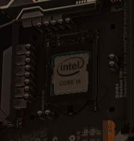

Si la carte mère peut être considérée comme le cœur d’un système, le processeur est assimilé au cerveau.
Il interprète et exécute les instructions qu’il reçoit. Ces dernières sont exprimées dans un langage binaire.
Le processeur est une pièce indispensable pour le fonctionnement des programmes ou encore l’affichage-écran.
Le CPU, pour Central Processing Unit, désigne la plupart du temps le processeur d'un ordinateur.
On peut le traduire en français par unité centrale de traitement (UCT) ou unité centrale de calculs.
Le CPU a pour mission de réaliser les différents calculs inhérents au bon fonctionnement de l'ordinateur.
Il constitue en ce sens un élément indispensable de la machine.
Il existe aujourd'hui un très grand nombre de CPU mis au point par les géants de l'informatique, comme IBM.
Tous s'appuient sur différents types d'architectures (x86, Alpha, ARM, etc.) pour leur fonctionnement.
| Source | *Image provenant du jeu "PC Building Simulator". |